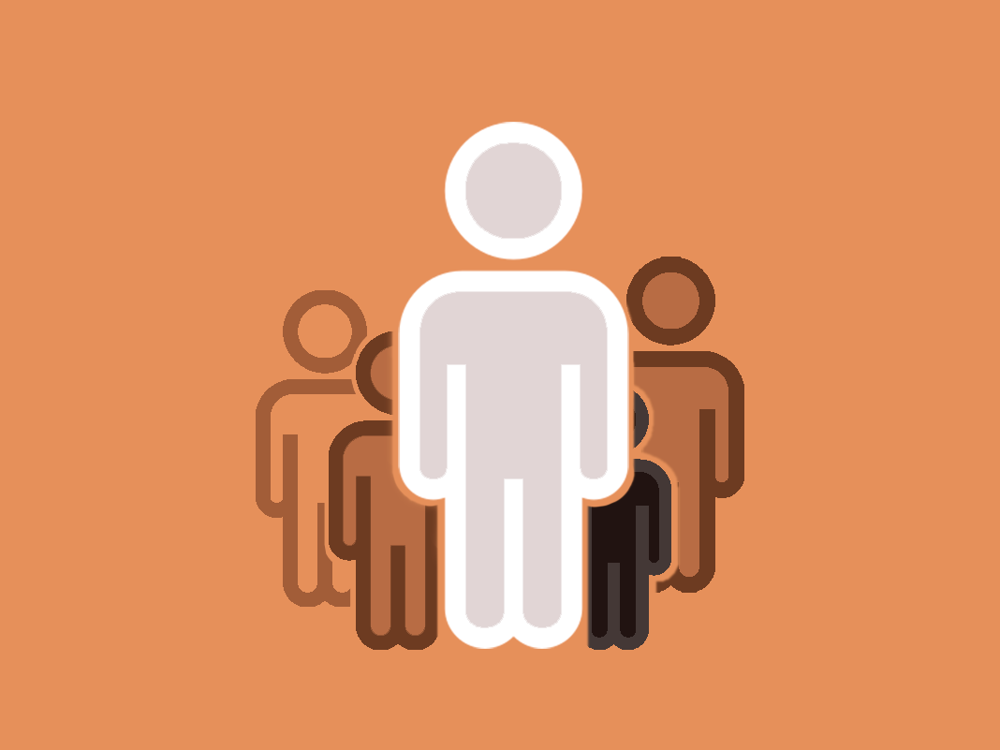
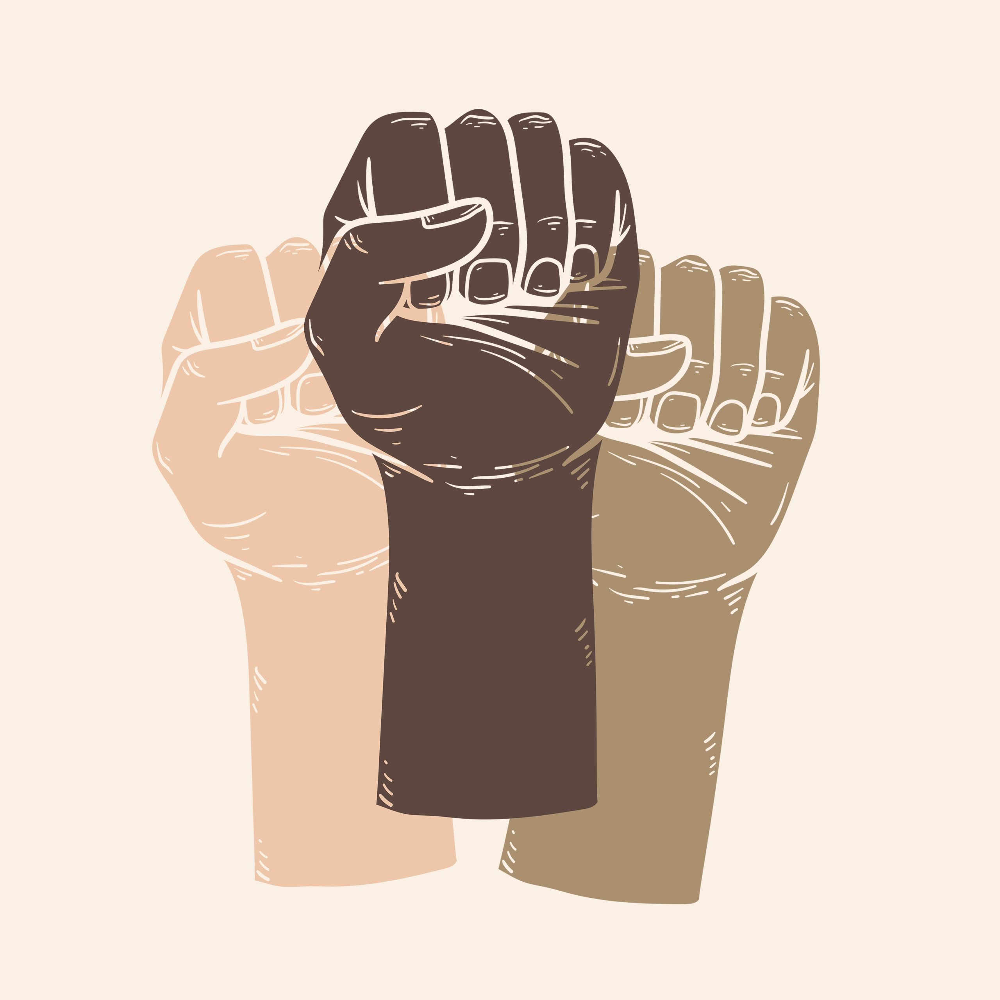

Neste livro poderoso, Cida Bento ― eleita em 2015 pela The Economist uma das cinquenta pessoas mais influentes do mundo no campo da diversidade ― denuncia e questiona a universalidade da branquitude e suas consequências nocivas para qualquer alteração substantiva na hierarquia das relações sociais.
Diante de dezenas de recusas em processos seletivos, Cida Bento identificou um padrão: por mais qualificada que fosse, ela nunca era a escolhida para as vagas. O mesmo ocorria com seus irmãos, que, como ela, também tinham ensino superior completo. Por outro lado, pessoas brancas com currículos equivalentes ― quando não inferiores ― eram contratadas.
Em suas pesquisas de mestrado e doutorado, a autora se dedicou a investigar esse modelo, que se repetia nas mais diversas esferas corporativas, e a desmistificar a falácia do discurso meritocrático. O que encontrou foi um acordo não verbalizado de autopreservação, que atende a interesses de determinados grupos e perpetua o poder de pessoas brancas. A esse fenômeno, Cida Bento deu o nome de “pacto narcísico da branquitude”.
Neste livro, a cofundadora do Centro de Estudos das Relações de Trabalho e Desigualdades (Ceert) reúne sua experiência para apresentar evidências desse acordo tácito e nos convidar a deslocar nosso olhar para aqueles que, a fim de se manter no centro, impelem todos os outros à margem.

O campo de estudos sobre branquitude é uma área de pesquisa que busca compreender a
construção social e histórica da identidade branca. Ele questiona a ideia de que a raça branca é
neutra ou universal, reconhecendo-a como uma posição privilegiada dentro das relações raciais.
Esse campo de estudos desnaturaliza a noção de brancura, investigando como ela é construída e
mantida por meio de discursos, práticas culturais e institucionais.
Os pesquisadores exploram as formas como a branquitude influencia as estruturas sociais e as
relações de poder. Eles analisam como essa construção racial se relaciona com outras identidades
raciais e étnicas, bem como com questões de privilégio, poder e opressão. O objetivo principal é
promover uma análise crítica das estruturas raciais existentes na sociedade
No campo de estudos sobre branquitude, são examinadas as maneiras pelas quais a branquitude é
perpetuada através de narrativas históricas, práticas culturais e políticas públicas. Essa análise busca
desafiar os discursos hegemônicos que reforçam a superioridade branca e contribuem para a
manutenção do status quo.
Além disso, os estudiosos investigam as interseções entre a branquitude e outras identidades
sociais, como gênero, classe social e sexualidade. Eles reconhecem que a experiência da
branquitude não é homogênea e pode variar de acordo com esses fatores.
O campo de estudos sobre branquitude também se dedica a examinar os impactos da branquitude
na vida cotidiana, nas instituições e nas políticas públicas. Os pesquisadores buscam entender como
a branquitude contribui para a reprodução das desigualdades raciais e quais estratégias podem ser
adotadas para promover a equidade racial.
Em resumo, o campo de estudos sobre branquitude é uma área de pesquisa que busca
desnaturalizar a noção de brancura, analisar as formas como ela é construída e mantida, investigar
suas interseções com outras identidades sociais e compreender seus impactos nas estruturas sociais
e nas relações de poder. O objetivo é promover uma análise crítica das estruturas raciais existentes e
contribuir para a construção de uma sociedade mais equitativa em termos raciais

Questionando as estruturas da supremacia branca nos Estados Unidos,constituindo a primeira onda. Assim é que a fundação histórica dos estudos sobre branquitude. Constatou, ainda, que a identificação a classe trabalhadora branca se deu com a elite patronal branca,e não com a classe trabalhadora negra,já que os trabalhadores brancos podiam se apoiar em identidades de “não escravos"e "não negros”. Nessa segunda fase, pesquisadores analisaram como as instituições legais definem quem é branco e assim distribuem acesso a material e a avanços ligados à branquitude, caracterizada como uma propriedade, um bem.
Destaco também os estudos de Peggy McIntosh, que, em 1988, elencou 46 privilégios de pessoas brancas, tais como: se verem amplamente representadas em programas de TV e revistas; falar em público para um grupo de homens poderosos sem que a raça seja posta em julgamento; escolher maquiagem facilmente; não precisar se posicionar em nome de toda uma raça, entre outros. Na terceira onda, a branquitude aparece sempre muito ligada às reações brancas diante do aumento da presença de negras e
negros em lugares antes frequentados só por brancos. A ampliação das vozes negras que denunciam a propriação dos bem materiais e imateriais da sociedade pelos brancos e clamam por justiça e reparação ameaçam a supremacia branca. O nacionalismo se evidencia recorrentemente na marginalização de grupos considerados minoritários para ocultar e contestar a existência do racismo institucional. A "vitimização” da branquitude e as diferentes manifestações do grupos brancos que se sentem ameaçados e perdendo o que entendem ser "seus direitos" se revela nesse período.
Para Fanon, ter fobia dos negros é ter medo do biológico, pois os
negros só são vistos como seres biológicos. Ele explica que para o
africano não há esse medo do biológico. Além disso, para ele, o ato
sexual é apresentado como natural.
que um dia ele me perguntou se os homens negros eram mesmo
mais ‘bem-dotados’ que os brancos?”. Acabamos rindo muito da
pergunta, pois ela já havia sido feita a outras de nós por parceiros
brancos.
Algum tempo depois refleti o que esse questionamento, feito por
homens brancos para mulheres negras, revela sobre a
masculinidade branca.
Parece que os mitos (ou não) criados em torno do homem negro,
que no imaginário social os colocam em situação de vantagem
diante do homem branco no que diz respeito à sua sexualidade, são
um importante elemento que assombra alguns homens brancos.
Esse mal-estar pode definir uma relação tensa de contraste com o
homem negro6 e ser parte da cega violência genocida de homens
brancos contra homens negros, porém sobre essa questão paira um
suspeito silêncio.
Fanon, psicanalista negro, após extenso estudo feito com
europeus durante quatro anos, chama a atenção para o fato de que
as representações sobre os negros estão matizadas de sexualidade:
“[…] no inconsciente europeu foi elaborado um crescendo
excessivamente negro onde estão adormecidas as pulsões mais
imorais, os desejos menos confessáveis”.
Para Fanon, ter fobia dos negros é ter medo do biológico, pois os
negros só são vistos como seres biológicos. Ele explica que para o
africano não há esse medo biológico. Além disso, para ele, o ato
sexual é apresentado como natural.
Enfim, as relações de dominação têm muitas facetas, e uma parte
expressiva delas, às vezes a mais relevante, fica encoberta,
silenciada.
Outra abordagem sobre branquitude pode ser observada na
análise de textos do período entre 2008 até 2016, feita por Steve
Garner, em 2017. Ele entende que, desde 2008, alguns caminhos
diferentes foram tomados, o que fez a terceira onda de estudos
Um exemplo de como a branquitude acrítica ganha materialidade, tendo como emblema o evento ocorrido em 2017, em Charlottesville. Cardoso propõe, então, atentar para o crescimento e o fortalecimento de organizações neonazistas-pode-se citar aí a Ku Klux Klan: grupo que representa significativo exemplo do fortalecimento da branquitude acrítica.
Já a branquitude crítica, segundo ele, diz respeito ao indivíduo ou grupo branco que condena publicamente o racismo, e, em princípio, estaria disposto a abrir mão de seus privilégios combatendo racismo estrutural que os sustenta. A branquitude que se evidencia na maior parte das pessoas brancas brasileiras e aquela que desaprova publicamente o racismo, embora no âmbito privado não necessariamente não seja racista. Esse é um ponto importante a ser debatido para entender e distinguir quando e como um discurso contra o racismo pode se transformar verdadeiramente numa prática antirracista.
Edith Piza, outra pesquisadora branca que abordou a branquitude, destaca que a igualdade social é experimentada apenas entre iguais (de mesma classe e raça). Por essa razão, o discurso da igualdade na diferença não contém a "lógica" que pode ser constatada no cotidiano, e pode ser vista como uma tentativa de relativizar o poder branco, o que nem sempre interessa. "Ser branco é viver sem se notar racialmente, numa estranha neutralidade. [...] É o outro que é de cor." Assim, ela destaca que a branquitude pode gerar uma lacuna afetiva e moral. Piza fala sobre a questão da racialidade e da pobreza.
Piza fala sobre a questão da racialidade e da pobreza, salientando que suas entrevistadas brancas colocavam as colegas
negras no lugar da pobreza, mesmo quando a situação econômica de ambas era similar. Ao comentar que sua família proibia a
convivência com negras, uma entrevistada disse: “Não era por dinheiro, era moral. Porque dinheiro… a gente também não tinha
dinheiro”. A pobreza branca é “diferente” ou não faz parte da pobreza negra. Por fim, a autora destaca ainda uma grande lacuna no discurso dos brancos referente à comunidade negra. Algo como “não vê, não sabe, não conhece, não convive”. Em termos cognitivos, há um embotamento na capacidade de apreender e aprender com o outro.
